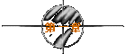
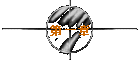

|
观音：孙悟空，你这个畜牲，你本来答应如来佛祖护送你师傅唐三藏
去取西经，你居然跟牛魔王串通起来要吃你师傅，你知不知道
你犯了弥天大罪？
孙悟空：少罗嗦！你追了我三天三夜，因为你是女人我才不杀你，不要
以为我怕了你了！
唐僧：悟空，你怎么可以这样跟观音姐姐讲话呢？
悟空：哗！不要吵！
唐僧：你又在吓我！
观音：你不是怕我又为什么要打伤紫霞仙子抢走她的月光宝盒，你不
就是想躲开我吗？
悟空：既然躲不了那老孙就跟你绝一死战！
(悟空将月光宝盒随手一抛，正好砸在唐僧头上。)
唐僧：又干什么？
(俩人正要动手，突然……)
唐僧：喂喂喂！大家不要生气，生气会犯了嗔戒的！悟空你也太调皮
了，我跟你说过叫你不要乱扔东西，你怎么又…你看我还没说
完你又把棍子给扔掉了！月光宝盒是宝物，你把他扔掉会污染
环境，要是砸到小朋友怎么办？就算砸不到小朋友砸到那些花
花草草也是不对的！
(悟空一把抓住唐僧手中的月光宝盒)
唐僧：干什么？
悟空：放手！
唐僧：你想要啊？悟空，你要是想要的话你就说话嘛，你不说我怎么
知道你想要呢，虽然你很有诚意地看着我，可是你还是要跟我
说你想要的。你真的想要吗？那你就拿去吧！你不是真的想要
吧？难道你真的想要吗？……
悟空：我Kao！
(悟空一拳将唐僧打倒。)
观音：啊？孙悟空！
悟空：大家看到啦？这个家伙没事就长篇大论婆婆妈妈叽叽歪歪，就
好象整天有一只苍蝇，嗡……对不起，不是一只，是一堆苍蝇
围着你，嗡…嗡…嗡…嗡…飞到你的耳朵里面，救命啊！
(悟空倒地翻滚，异常痛苦。)
悟空：所以呢我就抓住苍蝇挤破它的肚皮把它的肠子扯出来再用它的
肠子勒住他的脖子用力一拉，呵－－！整条舌头都伸出来啦！
我再手起刀落哗－－！整个世界清净了。现在大家明白，为什
么我要杀他！
观音：哼！悟空，你诸多借口，你根本就不想去取西经！
悟空：说那么多干什么，打呀！
(俩人一番斗法，悟空被观音降服收入甘露瓶。)
观音：今天我要替天行道！
唐僧：喂喂喂！徒弟有错做师傅的也有责任，求姐姐放他一条生路吧！
观音：我不消灭他我没法向玉皇大帝交代！
唐僧：请姐姐向玉皇大帝说一声，贫僧愿意一命赔一命！(合十坐地，
将法杖向空中一抛)喃呒阿弥陀佛！
(法杖将唐僧砸死。)
(未完待续)
| 
 
